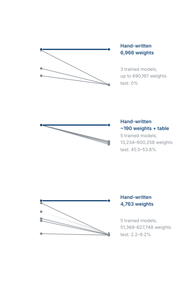
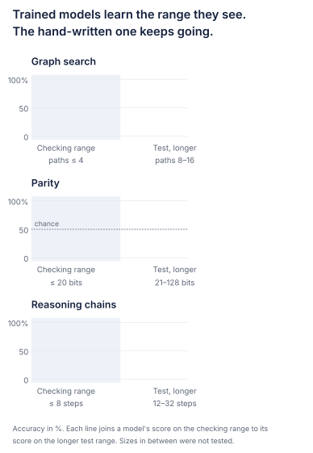
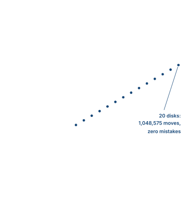
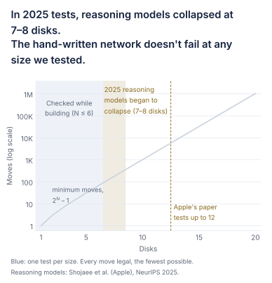
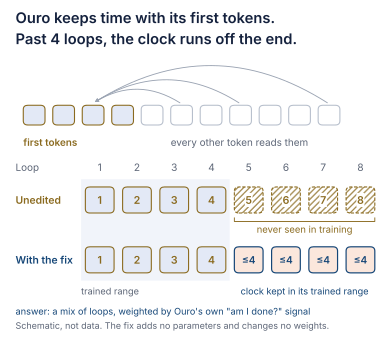

Claude Opus 5.5 hand-wrote a tiny transformer, and it solves mazes that Claude can't solve on its own. You give it the maze as text, the way you would give it to Claude, and it writes back the solved maze. Only 922 of its weights aren't zero. Its single layer runs again and again: in every run, each cell of the maze reads its four neighbours, until the whole path is found. This builds on Weight-Space Programming (MIT CSAIL), which showed that LLMs can read and write neural network weights directly. We take it one step further: we let the networks loop. We call it looped weight-space programming. Nothing about these networks was trained.
- It beats the model that wrote it. On Maze-Hard, a well-known benchmark, Claude Opus 5.5 solves 13 of 50 test mazes on its own (Davis et al., NeurIPS 2026, Table 25). The network it wrote, with 19,936 weights, solves all 1,000. Run for more loops, the same weights also solve bigger mazes, at 60×60 and 100×100.
- One small layer, 1,048,575 moves, zero mistakes. Claude's Tower of Hanoi network is a single transformer layer that runs over and over, writing one move at a time. It solves 20 disks: 1,048,575 moves, every one legal, the fewest possible. MAKER (Meyerson et al., 2025) was the first to solve it with an LLM, by asking for every move at least three times and taking a vote: over 3 million LLM calls in all. Here it is one network with 427,654 weights, and only 3,686 of them aren't zero.
- 100% vs 0%, against models 99× bigger. On graph paths longer than any it was checked on, Claude's 6,966-weight network gets every one right. Trained models up to 99× bigger get none.
Claude Opus 5.5 solves 13 of 50 Maze-Hard test mazes on its own (Davis et al., NeurIPS 2026, Table 25). A small network that Claude wrote by hand solves all 1,000. How can a network beat the model that wrote it? Long tasks that have to be exactly right are hard for AI models, and trained networks often fail as soon as a problem is longer than the ones they learned from. A network written by hand can solve these tasks exactly, for as many steps as they need.
Looped weight-space programming
LLMs can now write weights. Earlier this month, researchers at MIT CSAIL showed that a frontier LLM can work on a network's weights directly, with no training (Weight-Space Programming, credited below). It fixed a flaw in a small Qwen language model by editing its weights, and wrote small game-playing networks from scratch. But a written network stays small, because the LLM has to know the job of every weight it sets.
Our step: scale them with loops. To do a bigger job, you could write a bigger network, but every extra weight is one more thing to get exactly right. Instead, we keep the network small and loop it. A looped transformer runs the same layer again and again, feeding its output back in, so it gets more steps of work without getting any bigger. Each run is called a pass. Claude writes one small layer that does one step well, and the loop repeats it as often as the task needs. Nothing is trained: Claude sets every weight itself, and no weight is fitted to data. Compiling programs into weights has been done before (see Related work). Using loops to scale LLM-written networks is the step we add. We call it looped weight-space programming.
Loops take a small network a long way. The Hanoi network has only 3,686 weights that aren't zero, yet it makes all 1,048,575 moves of the 20-disk puzzle. Looped transformers are already an active research area, and they have a known weakness. Trained ones overthink: run them for more loops than they were trained with, and their answers get worse. A written loop can be built so that once the answer is ready, extra passes leave it exactly as it is.
They beat much bigger models. The 19,936-weight maze network solves all 1,000 Maze-Hard test mazes, where Claude itself solves 13 of the 50 it was tested on. A 6,966-weight network finds the length of every shortest route, where trained models 99× its size get none right. Trained looped models have the same kind of loop, but in our tests training didn't find these solutions. Writing the weights did.
They carry over to bigger problems. While building a network, Claude could check it only on small inputs, which we call its checking range. Most of our tests use much bigger inputs it never saw. The Hanoi network was checked on up to 6 disks and solves 20. A network that tells whether a string of 0s and 1s has an odd or even number of 1s was checked on strings of up to 20 and is right at every length we tested, up to 4,095. The same maze weights, run for more loops, also solve mazes at 100×100.
Is this just a program in disguise?
In a way, yes. The program lives in the network's weights, and the code that runs it knows nothing about the task. From the outside, it works like any transformer: it reads tokens and writes its answer as tokens. Some of these networks read the same English question an LLM gets, and answer in text.
Then why not just write a program?
Because the network is the point. A small network that loops, written by an LLM, can solve problems that the LLM itself, and trained networks far bigger, get wrong.
What does writing a network involve?
Writing breadth-first search in Python is writing software. Writing it as a network is more like designing a chip out of fixed parts. A transformer has no variables, no if-statements and no queue, and no loop of its own apart from the one that re-runs it. Every step has to be built from the same few parts (attention, matrix multiplications and simple nonlinearities), applied to every cell of the maze at once. The network also has to read the raw maze text itself, because the code that runs it knows nothing about mazes. And it has to stay exact through hundreds of loops of continuous arithmetic, where a small error in one loop could grow in the next. Here is how the maze network is put together from those parts.
1 · Once, at the start
Reading the maze
Each character of the maze text becomes one token, so each token is one cell. Separate row and column tables give every cell its place, on grids up to 128×128.
2 · Every loop
Finding the neighbours
Four attention heads, one per direction. Each puts all its weight on one neighbour: the cell below, to the left, to the right or above.
3 · Every loop
The wave
Each unreached cell next to a reached one takes that neighbour's distance plus one, so the reached area spreads one step from the goal. The distance is stored modulo 3 (0, 1, 2, 0, 1, 2, …), as three switches with exactly one on.
4 · Every loop
Pointers
Each reached cell points to the neighbour one step closer to the goal. Modulo 3 is enough to tell which one that is. Ties are broken in the order down, left, right, up.
5 · Every loop, then at the end
The path
From the start, a chain switches on along the pointers, one cell per loop. The answer is final at loop 2D, twice the path's length D. The cells that are on are written out as the path.
6 · After every loop
Staying exact
Every update snaps back to exactly 0 or 1. After every loop, every value apart from a cell's position is exactly 0 or 1, so no error can build up.
The algorithm is simple. Building it out of a transformer's parts, so that it stays exact as the maze grows, is not. In our graph-search tests, trained networks built from the same parts failed on longer routes, even the largest, which learned the small cases almost perfectly.
So we asked five questions:
- Can it beat the model that wrote it? (Maze-Hard)
- Does it beat trained models, even much larger ones? (graph search, parity, reasoning chains, BIG-Bench Hard)
- Can it solve the puzzles that broke reasoning models? (Tower of Hanoi, Checker Jumping)
- Does it hold up on problems built to stump strong LLMs? (BIG-Bench Extra Hard)
- Can the same approach help a real pretrained looped model? (Ouro-1.4B, a looped language model trained by others)
1. Can it beat the model that wrote it?
Experiment 1
Maze-Hard
Maze-Hard is the 30×30 maze benchmark from the HRM paper (Hierarchical Reasoning Model), also used by TRM (Tiny Recursive Model) and others. Both are small models trained to solve puzzles like this by repeating a step many times. The task is to find the shortest path, which is over 110 steps long. Most mazes have many equally short paths, and the dataset marks one of them as the answer.
Frontier LLMs find it hard. In tests reported for the Lattice Deduction Transformer (LDT, Davis et al., NeurIPS 2026), a small model trained on mazes, Claude Opus 4.6, DeepSeek V4-Pro and GPT-5.4 solved none of 200 test mazes in April 2026. In October 2026, Claude Opus 5.5 and GPT-6 Astra each solved 26% of the 50 test mazes they were tested on, and GPT-6.1 Sol 12%.
How the network solves it. The network reads the maze as text, one token per cell, and writes back the same grid with the path marked, in the format the dataset uses. In every loop, each cell of the maze looks at its four neighbours. First, distance from the goal spreads out: in loop 1 the goal's neighbours learn they are 1 step away, in loop 2 the cells 2 steps away, and so on. Each cell keeps its distance counted in threes (0, 1, 2, 0, 1, 2, …), which is all it needs to tell which neighbour is one step closer. Once this reaches the start, the path grows from the start, one cell per loop, always to the neighbour one step closer to the goal. On the test mazes, the answer stops changing after 218 to 306 loops. We run 1,800 loops, and 3,600 or 7,200 give exactly the same answer.
Can it solve mazes that stump the model that wrote it?
Yes. It solves all 1,000 test mazes. Every answer is a shortest path, and it is also the exact path the dataset expects. On the 50 test mazes Claude was tested on, where it solves 13 on its own, the network it wrote solves all 50.
A separate check re-ran the network on all 1,000 test mazes and on 500 freshly made ones, and it solved every one exactly.
An extra test used bigger mazes, generated in the Maze-Hard style. The same 19,936 weights, run for more loops, also solved all 50 mazes at 60×60 and all 40 at 100×100.
A short program can solve these mazes too, and Claude can write one. The difference here is that the solver is itself a neural network, 19,936 weights with no training.
| Model | Training | Solved (%) |
|---|---|---|
| Hand-written (19,936 weights, only 922 not zero) | None | 100.0 |
| LDT (1.8M weights) | 1K mazes, plus search when solving | 99.8 |
| TRM (7M weights) | 1K mazes | 91.9 |
| HRM (27M weights) | 1K mazes | 84.6 |
| Claude Opus 5.5 | No maze training, tested on 50 of the test mazes | 26 |
| GPT-6 Astra | No maze training, tested on 50 of the test mazes | 26 |
| GPT-6.1 Sol | No maze training, tested on 50 of the test mazes | 12 |
A maze counts as solved when the answer is any shortest path from start to goal. The hand-written network also matches the dataset's exact path in all 1,000, the stricter measure HRM and TRM use. Scores for LDT, TRM and HRM are from Table 3 of Davis et al. (NeurIPS 2026). Scores for the LLMs are from their Table 25, run in October 2026 with no worked examples and reasoning effort set to high.
The network carries out a known step-by-step procedure for finding the shortest path, so the trained models and LLMs are listed for reference, not as a like-for-like race.
Details: other scoring, and how the comparison models were picked
HRM and TRM count a maze as solved only when the answer matches the dataset's reference path exactly (per Davis et al.). Scored that way, their own papers report 74.5 for HRM and 85.3 for TRM. Attractor Models (Fein-Ashley and Rashidinejad, 2026) report 93.1 with 27M weights, trained on ~1K mazes. That paper doesn't say how it scores a maze. It follows TRM's training protocol and reports its number next to HRM's 74.5 and TRM's 85.3.
Davis et al. retrained HRM and TRM and report each one's best score during training, measured on the test set. LDT's 99.8 is its strongest setting, trained on 512 shortest paths per training maze. Trained on one path per maze, it scores 99.0. Both are averages over 3 runs.
Good to know. Most mazes have many shortest paths. To give the dataset's exact path, the network breaks ties with a fixed order of moves (down, left, right, up). This order was chosen from 96 candidate rules because it matched all 1,000 training mazes, while the next best matched 956. It matters only for matching the dataset's exact path. The network's row and column tables have rows for mazes up to 128×128, and a 30×30 maze uses only the first 30 rows of each.
Deep dive
Why can't Claude just solve it?
Why does the network work?
Here is what the network stores, cell by cell, while it solves the first test maze.
Every cell has a fixed place. Each token is one cell of the maze, and it carries that cell's row and column. The network uses them to look straight at the cells above, below, left and right. It never has to count along the text to find which character sits above which.
Each loop, the count spreads by one cell. The goal holds 0. In every loop, each open cell that has no count yet looks at its four neighbours. If one of them has a count, it takes that count plus one. So the distance from the goal spreads out around the walls, one cell per loop. A loop later, the cell also points to a neighbour one step closer to the goal. Once the count reaches the start, the path grows from the start along these arrows, one cell per loop, until it reaches the goal.
The values snap back every loop. The network never stores a distance as a big number. It keeps each distance counted in threes, which is enough to tell which neighbour is one step closer. Apart from the numbers that give each cell's position, every number it stores is 0 or 1. The layer is written so that each value it updates snaps to exactly 0 or exactly 1, even when its input is slightly off. So tiny rounding errors are wiped out in every loop instead of building up. On this maze, after every one of the 1,800 loops, every one of those numbers was exactly 0 or 1.
Extra loops change nothing. On this maze the answer is complete at loop 222, and one loop later the whole state stops changing. Every count, arrow and path cell stays exactly as it is, all the way to loop 1,800. So the number of loops only has to be big enough. We run twice as many loops as the maze has cells, which is always enough, and the same rule lets the same weights solve mazes at 60×60 and 100×100.
Why can Claude write it?
The description is short, and the run is long. 97 lines of code, using 11 formulas, set all 19,936 weights. Claude had the final design 15 minutes in and made its last change to any weight at 40 minutes. Solving a single maze takes hundreds of loops, and every one of them has to be exact. Claude never has to carry out those steps. It only has to describe one of them correctly.
The design takes real ideas. The clearest one is counting in threes. An earlier version stored each cell's full distance from the goal, and those numbers grow with the maze. The final version stores only the distance modulo 3, as three switches with exactly one on. Neighbouring cells differ by exactly one step, so that is enough to tell which neighbour is closer. The stored values never grow, so a bigger maze doesn't make them harder to keep exact. The same weights also solved all 40 mazes at 100×100.
It took one detour. The first design, suggested in the task description, marked every cell on any shortest path. Then the training answers showed that the dataset expects one particular path: most mazes have many shortest paths, and the answers always pick one by a fixed order of moves. Claude rebuilt the network around a chain of pointers that traces exactly that path.
2. Does it beat trained models, even much larger ones?
The maze network was written, not trained. Could ordinary training have found networks like it? To find out, we trained standard networks on graph search, parity and reasoning chains, using exactly the sizes the hand-written networks were checked on. Then we gave both kinds the same test on bigger problems.
Experiment 2
Graph search
The first task is finding a shortest route. The input is a map of one-way links between points, with dead ends and decoys. The question is how many steps the shortest route from A to B takes, or whether B can't be reached at all. Longer routes need more steps of work, so the hand-written network runs its loop more times on bigger maps.
How the network solves it. The network keeps track of which points it can already reach from A. In each loop, every reached point passes that on along its outgoing links, so the reached area grows by one step per loop. The number of loops it takes to reach B is the length of the route.
- Task
- Given a map of one-way links with dead ends and decoys, give the length of the shortest route from A to B, or say that B is unreachable
- Network
- Three transformer layers, looped: 6,966 weights, and only 642 of them aren't zero
- Checked on
- Maps of up to about 12 points, routes of up to 4 steps
- Tested on
- Maps of up to about 48 points, routes of 8–16 steps, run once
- Trained models
- Trained on the same sizes, with their settings tuned and their best version kept
Can a trained network learn the same thing from examples?
Not beyond the examples it saw. On shortest paths 8–16 steps long, the hand-written network scores 100%. Trained models up to 99× larger score 0% at every distance, even the largest, which learns the checking range almost perfectly.
| Model | Weights | Checking range | Test, paths 8–16 | Test, "unreachable" |
|---|---|---|---|---|
| Hand-written (looped) | 6,966 | 100 | 100 | 100 |
| Trained, looped | 26,561 | 25.6 | 0 | 98.3 |
| Trained, ~10× the hand-written size | 69,905 | 46.2 | 0 | 76.7 |
| Trained, ~99× the hand-written size | 690,197 | 97.4 | 0 | 98.3 |
Accuracy in %. The largest trained model learns the checking range almost perfectly, then scores zero at every longer distance. The two smaller ones don't learn even the checking range well. We checked that the puzzles have no shortcut. No single clue in the input beats always guessing the most common answer by more than 1 point.
Experiment 3
Parity and reasoning chains
Two more tasks test the same thing. Parity asks whether a string of 0s and 1s has an odd or even number of 1s. Reasoning chains are shuffled statements like x2 = x1 + 5. x0 = 7. x1 = x0 + 3., followed by a question about one variable. Extra chains that lead nowhere are mixed in, so adding up all the numbers doesn't give the answer.
How the networks solve them. The parity network keeps a running answer, odd or even so far, at every position. In each loop, every position looks one place back and updates its answer from the one before. The chains network works the same way along a chain: each statement looks up the statement that defines the variable it depends on, and one more link of the chain gets its value in each loop.
Is graph search a lucky case?
No. Parity and reasoning chains tell the same story. Checked on strings up to 20 bits, the parity network is correct at every length we tested, up to 4,095. Checked on up to 8 steps, the chains network is correct on 12, 16, 24 and 32, and up to 63 in an extra, harder test.
The hand-written parity network has a looped part of about 190 weights, plus a table of positions that grows with the input (24,766 entries at 4,096 positions).
| Model | Weights | Checking range (≤ 20 bits) | Test (21–128 bits) |
|---|---|---|---|
| Hand-written (looped) | ~190 + table | 100 | 100 |
| Trained, looped | 50,434 | 100 | 53.8 |
| Trained, 1 layer | 50,434 | 100 | 52.6 |
| Trained, 4 layers | 13,234 | 100 | 49.2 |
| Trained, 8 layers | 101,858 | 100 | 49.5 |
| Trained, 12 layers | 600,258 | 100 | 45.5 |
Accuracy in %. Chance is 50%. The hand-written network gets every tested length right, all the way to 128 bits. Only two trained models stay at 99% or above even at 21 bits, and none beyond.
Details: can trained models ever handle longer parity strings?
With standard training, none of these models handles strings longer than the ones it saw. Beyond 20 bits they are at about chance. Special training recipes do go further, to over 40 bits (Fan et al.) and to 256 bits (Zhang et al.). This network reaches 4,095 bits with no training. In an extra test on lengths from 256 to 4,095 bits, it got every input right.
| Model | Weights | Checking range (≤ 8 steps) | Test (12–32 steps) |
|---|---|---|---|
| Hand-written (looped) | 4,763 | 100 | 100 |
| Trained, looped | 77,924 | 69.1 | 2.2 – 9.2 |
| Trained, 1 layer | 77,924 | 7.0 | 2.8 |
| Trained, 4 layers | 51,368 | 43.4 | 2.8 |
| Trained, 8 layers (~90× the hand-written size) | 427,812 | 93.7 | 3.5 |
| Trained, 12 layers | 627,748 | 49.6 | 4.0 |
Accuracy in %. Each trained model got up to 60 minutes of GPU time. Several did not fully learn the checking range, so the cleanest comparison is the 8-layer model: 93.7% on the checking range, 3.5% beyond it.


Experiment 4
BIG-Bench Hard: Boolean Expressions and Dyck Languages
In graph search, parity and chains, the trained models were ones we trained ourselves. The next comparison uses public language models on a public benchmark. BIG-Bench Hard (Suzgun et al.) collects the tasks from the BIG-Bench benchmark that language models found hardest at the time. We took two pure rule-following tasks from it. One, Boolean Expressions, asks for the value of a logic expression like not ( True and False ) or False. The other, Dyck Languages, asks to close a bracket sequence like [ { ( ) < → > } ].
How the networks solve them. The Boolean network simplifies the expression one step per loop, the way you would by hand: not True becomes False, brackets around a single value disappear, and so on, until one value is left. The Dyck network first works out how deep each bracket sits, by adding up the openers and closers before it. Then it finds the most recent bracket that is still open and writes the bracket that closes it, one at a time.
Can a tiny network beat small language models?
On these two tasks, yes. Both networks score 100% on the official 250 test items. Among four well-known small open models, the best scores are 69.6% and 33.2%.
| Model | Weights | Boolean Expressions | Dyck Languages |
|---|---|---|---|
| Hand-written (one network per task) | 183,856 / 58,695 | 100.0 | 100.0 |
| SmolLM2-360M | 361.8M | 69.6 | 23.6 |
| SmolLM2-135M | 134.5M | 66.8 | 19.2 |
| Pythia-410M | 405.3M | 52.0 | 33.2 |
| Pythia-160M | 162.3M | 50.4 | 22.4 |
Accuracy in %, exact match after stripping whitespace for every model. Boolean chance is 50%. Scored without stripping spaces, all four small models get 0, because their answers start with a stray space. Frontier models score above 90% on BIG-Bench Hard (Kazemi et al., 2025), so this comparison is against small open models only.
The networks read the same questions as the small models and answer in text, and every answer is scored the same way. Each hand-written network does one task, while the small models are general models given three examples. So this shows that a tiny network can do the task exactly, not that it reasons better in general.
No leakage. The networks follow the general rule and didn't absorb anything from the test items: on 300 freshly generated questions per task, they also score 100%. The test questions were on the same machine while the networks were being written, and the session records show they were never opened.
Good to know. The Boolean network has 183,856 weights, and only 6,756 of them aren't zero. 149,504 of them are a fixed lookup table of positions with 2,048 rows, so it reads inputs of up to about 2,048 characters. The looped block itself is small: two layers with 89 neurons. The Dyck network has 58,695 weights, and only 8,491 of them aren't zero.
3. Can it solve the puzzles that broke reasoning models?
Next, two puzzles where the answer is a long run of moves, and one wrong move anywhere ruins it.
Experiment 5
Tower of Hanoi
Tower of Hanoi is a puzzle with three pegs and a stack of disks, smallest on top. The goal is to move the whole stack from the first peg to the third, one disk at a time, never putting a larger disk on a smaller one. Each extra disk roughly doubles the number of moves: 20 disks take 1,048,575.
It became famous as the puzzle where reasoning models break down. Reasoning models are LLMs that think step by step before they answer. In 2025, Shojaee et al. at Apple tested them on Tower of Hanoi in The Illusion of Thinking (NeurIPS 2025). The models of the time, o3-mini, DeepSeek-R1 and Claude 3.7 Sonnet Thinking, began to collapse at 7–8 disks when writing out every move without tools. Giving them the solution algorithm did not help.
Some newer models still fail early. In 2026 tests, o4-mini failed from 6 disks, and Qwen3-235B-Thinking fell to about 52% at 7 disks and 20% at 8 (Pushkin and Abbe, 2026, read from a plot). When allowed to write and run code, models solved every size tested, up to 13 disks (Song et al., 2025).
How the network solves it. Before each move, the network's attention averages over everything written so far: the starting position plus every move already made. That average tells it exactly which peg each disk is on now.
The rest of the layer applies the classic rule for this puzzle, written straight into the weights. It takes turns between two kinds of move. First it moves the smallest disk one peg along, in a direction set by whether the number of disks is odd or even. Then it makes the only other legal move. When every disk is on the third peg, it says it is done.
It works out the position from scratch at every move, instead of keeping a running tally. So small errors have nothing to build up on, even over a million moves, and extra passes give exactly the same answer.
- Task
- Move N disks from the first peg to the third, one at a time, never placing a larger disk on a smaller one
- Network
- One transformer layer, looped: 427,654 weights, and only 3,686 of them aren't zero
- Written by
- Claude Opus 5.5, from a plain-language description of the puzzle
- Checked on
- Up to 6 disks
- Tested on
- 7 to 20 disks
- Not allowed
- Training, gradients, fitting to data, any puzzle logic in the code that runs it
- Scoring
- A separate program replays every move, checks that each one is legal, and checks that the puzzle ends solved in the fewest possible moves
Can it really make a million moves?
Yes. All 1,048,575 of them, and none is wrong.
The hand-written network solves every size from 7 to 20 disks. Every move is legal, and every total is the fewest possible. At 20 disks that is 1,048,575 moves.
It also doesn't overthink. Run its layer 4 or 8 times per move instead of 2, and every move comes out exactly the same.
| Disks | Moves | Hand-written network | Reasoning models (Shojaee et al., 2025) |
|---|---|---|---|
| 7–8 | 127 / 255 | ✓ all legal, fewest moves | Begin to collapse |
| 9–12 | 511 – 4,095 | ✓ all legal, fewest moves | Collapsed |
| 13–19 | 8,191 – 524,287 | ✓ all legal, fewest moves | Beyond the paper's range |
| 20 | 1,048,575 | ✓ all legal, fewest moves | Beyond the paper's range |
Apple's paper tests up to 12 disks. In its own words, reasoning models "face a complete accuracy collapse beyond certain complexities" (Shojaee et al., abstract). It grades whether the moves are legal, not whether they are the fewest possible.


Couldn't an LLM do this too?
Up to a point. Reasoning models can write out every move for smaller towers, and with code they solved every size they were tested on, up to 13 disks (Song et al.). For 20 disks, MAKER voted over more than 3 million LLM calls. Here, one small neural network does all 1,048,575 moves itself.
Apple's paper drew pushback, and part of the debate is how hard Tower of Hanoi really is. It needs no search, because each move is a simple decision. Critics of the Apple paper argued that part of the collapse came from output limits. The authors replied that the first errors appear early, around move 40 at 8 disks.
MAKER (Meyerson et al., 2025) was the first to solve 20 disks with an LLM and no errors. It asks gpt-4.1-mini for each move several times and keeps voting until one answer leads by three. That is at least three calls per move, and over 3 million in all. The strategy is in every prompt, and a program keeps track of the pegs between moves.
Our network is a different kind of thing: one network, with no voting and no outside help. It is also a specialist that does only this. Our claim is narrower than "better than LLMs": a network can carry out the entire sequence, at every size we tested, without one error.
Good to know. It works out how many disks there are from the starting position. It only goes from the first peg to the third, and started anywhere else, it doesn't finish. It needs 64-bit numbers, because with 32-bit numbers rounding errors could pile up over a million moves. Its context window, the number of tokens it can read, is sized so that 20 disks is the most it can handle.
Experiment 6
Checker Jumping
Red and blue checkers sit in a row with one empty space between them. The goal is to swap the two colours, moving only forward, by sliding into the empty space or jumping over one checker of the other colour. This is the second puzzle Apple used for its "even with the algorithm, models still fail" finding. In Apple's 2025 tests, Claude 3.7 Sonnet Thinking and DeepSeek-R1 failed from about 3 checkers per side (15 moves). o3-mini, on its high reasoning setting, held about 50% or better up to 8 per side. These values are read from the paper's figures. In 2026 tests, GPT-5.2 at low effort fell below 20% from 9 per side and to about zero by 11 (Pushkin and Abbe, 2026, read from a plot).
How the network solves it. Like the Hanoi network, it reads the board and every move so far, then applies a simple rule written into its weights. If a checker can jump into the empty space, it jumps. Otherwise a checker slides in, and when both colours could, it picks the colour that moved last. When no move is left, it stops.
Claude checked it on boards of up to 3 checkers per side while building it. Every size tested below is bigger.
Does it work on a second puzzle?
Yes. Every size from 4 to 40 checkers per side, each in the fewest possible moves.
At 40 checkers per side that is 1,680 moves. Sizes above 15 per side are beyond the paper's range.
Good to know. It reads the board from the prompt. The move strategy and the stopping rule are built into its weights. It has 10,008,568 weights, and only 11,062 of them aren't zero. It is built for boards of up to 40 checkers per side.
4. Does it hold up on problems built to stump strong LLMs?
On Maze-Hard, a written network beat the model that wrote it. Can written networks hold up against strong LLMs too, on tests built to be hard for them? BIG-Bench Extra Hard (BBEH, Google DeepMind, 2025) was built because frontier models, the strongest LLMs, had become too good at BIG-Bench Hard. It replaces each task with a much harder version. We took two of its tasks. In Web of Lies, the model works out who is telling the truth from a long chain of claims. In Shuffled Objects, it tracks who holds what after many swaps. Each network reads the question in plain English, the same text the LLMs are given, and writes its answer as text.
How the networks solve them. In Web of Lies, each person's claim is about someone else. In each loop, everyone whose subject is already settled works out whether they are telling the truth, so the answers spread along the chain of claims. In Shuffled Objects, the network finds every swap in the text and combines them. In each loop, every position merges its record of swaps with one twice as far back, so after a few loops the last position knows the result of all the swaps.
Do the networks hold up where strong LLMs fall short?
Yes. Both get all 180 test questions right. A separate check re-ran both networks and got the same scores.
| Model | Method | Reported | Web of Lies | Shuffled Objects |
|---|---|---|---|---|
| Hand-written | One network per task | Nov 2026 | 100.0 | 100.0 |
| Qwen3-235B-A22B | Plain reasoning | Oct 2025 | 81.2 | 14.4 |
| Qwen3-235B-A22B | Program synthesis | Oct 2025 | 81.2 | 56.9 |
| o4-mini | Plain reasoning | Oct 2025 | 38.8 | 8.1 |
| o4-mini | Program synthesis | Oct 2025 | 52.5 | 34.4 |
| o3-mini (high) | Plain reasoning | Feb 2025 | 43.0 | 49.5 |
| DeepSeek-R1 | Plain reasoning | Feb 2025 | 29.5 | 6.0 |
| GPT-4o | Plain reasoning | Feb 2025 | 14.5 | 14.0 |
| Random guess | Chance | Feb 2025 | 5.5 | 14.3 |
Accuracy in %. "Plain reasoning" means the model reasons in text. "Program synthesis" means it writes a program that is then run. The question sets differ, so compare the scores loosely.
There is a catch. These networks read BBEH's fixed question templates and solve them exactly, so they don't show that a tiny network reasons better than general models. What they show is how much of these hard tasks is fixed structure, the kind a tiny network can handle exactly.
Details: where each score comes from
Ours: 180 of 180 on each task. The task's 20 public example questions are not counted. Feb 2025 rows: the BBEH paper (Kazemi et al.), on all 200 questions per task. Oct 2025 rows: Stein et al. (Tables C.2 and C.5), on a random 80% of each task's questions.
Good to know. Each network understands only the wording it was built for, taken from the public examples, the paper's description and a few everyday words such as "swaps" and "trades". None of those extra words appears in the test questions. It doesn't understand statements worded any other way. The Shuffled Objects network assumes the options are listed in the order the objects were first handed out, as in every public example. They need 64-bit numbers and an exact softmax, the step that turns attention scores into weights. With a standard library softmax, Web of Lies drops to 139 of 180. Web of Lies: 10,903,996 weights, and only 44,550 of them aren't zero. Shuffled Objects: 6,663,936 weights, and only 40,316 of them aren't zero.
5. Can the same approach help a real pretrained looped model?
Every network so far was written from scratch. The last question is about a model someone else trained, and the result is of a different kind: a change to how its loop runs, not new weights. Ouro-1.4B is a pretrained looped language model that runs its 24 layers 4 times. Run it for more loops, and it gets worse. This is the overthinking from the start of the post. Ouro also has a built-in "am I done?" signal, which it uses to decide when to stop looping.
Why does it get worse?
Its first few tokens act as a clock, and past 4 loops the clock shows values it never saw in training.
Claude found this by reading the model's internal states. The trouble starts at loop 5. It changes the output more than loop 4 did, and Ouro's own "am I done?" signal drops, as if the model had gone back to an early loop.
The cause is at the very start of the input. Ouro adds no start token, so its first token can only look at itself. Loop after loop, its state steps through a fixed sequence, and every other token reads the first few tokens, like a clock. Past loop 4, the clock shows values Ouro never saw in training.
We tested this directly. At each extra loop, we reset the first four tokens to their loop-3 state. That removes about 93% of the harm loop 5 does. Pinning them at their loop-4 state instead makes it 2–4× worse. As a control, rescaling every other token does almost nothing.
Can it be fixed without training?
Yes, in the sense that more loops stop hurting. The fix sets the first few tokens on a schedule that keeps the clock in its trained range. It also takes the answer from a mix of loops, weighted by Ouro's own "am I done?" signal. It adds no new weights and changes none. More loops stop hurting.

We measured three things: perplexity, which says how well the model predicts real text (lower is better), ARC-Challenge, a set of science exam questions, and 3-step versions of the reasoning chains from question 2. A second table shows GSM8K, a set of grade-school math word problems, at 4 and 8 loops.
| Ouro-1.4B | Perplexity (lower is better) | ARC-Challenge | 3-step chains |
|---|---|---|---|
| 4 loops, as trained | 11.61 | 52.6 | 21 |
| 8 loops | 12.63 | 50.8 | 18 |
| 16 loops | 21.24 | 44.7 | 14 |
| 16 loops, with the fix | 11.54 | 52.1 | 20 |
Test sets: 200 test passages from wikitext-103, a standard collection of Wikipedia articles, ARC-Challenge test (1,172 questions, no worked examples) and 100 chains.
| GSM8K (500 problems, 8 worked examples) | 4 loops | 8 loops |
|---|---|---|
| Ouro-1.4B | 75.0 | 66.6 |
| Ouro-1.4B, with the fix | 77.2 | 75.2 |
Details: uncertainty, and how this compares with STARS
The 95% confidence intervals at 8 loops are 75.2 [71.4, 78.8] with the fix and 66.6 [62.4, 70.6] without it. The 4-loop gain with the fix (77.2) comes from the answer-mixing step alone and is small enough that it could be noise.
STARS (ICML 2026) addressed the same decline in Ouro with extra training. Ours needs no training. Our 4→8 drop without the fix is smaller than the one STARS reports (−8.4 vs −17.0 points), which suggests the two setups differ.
Good to know. This is stability, not a gain. Extra loops no longer hurt, but they do not beat 4 loops on ARC or the chains. And it changes how the loop runs, not the weights.
What this shows, and what it doesn't
Claude wrote small networks that solve hard problems exactly, including on inputs much larger than the ones they were checked on. On Maze-Hard, the network solved mazes Claude could not solve on its own. Here is what it does not show.
- Each network is a specialist. One network, one task. The language models we compare against are general.
- These tasks have known algorithms. Claude decides what each loop should compute and turns that into weights. The point is that the result runs without error at sizes where the trained models we tested, and the reasoning models in the papers we cite, fail.
- Comparisons use the numbers each paper reports, with the paper and date given. Newer models may score differently.
- Weight counts include lookup tables of positions. Where the looped layers themselves are much smaller, we give their size too.
How we kept it honest
- No training, no gradients and no fitting to data in any hand-written network.
- We locked each network before testing it, and tested it once.
- The code that runs a network is the same simple loop for every task. Everything the network knows is in its weights.
- Independent reviewers, which were separate Claude agents that hadn't seen how the networks were built, checked the work. The results reported here held up.
Related work
What's next
- One hand-written network for many tasks, with a written router that picks the right module.
- Hand-written weights as a starting point for training. Does gradient descent keep the extrapolation, or wash it out?
- Keeping the loop clock in range while training looped language models.
Claude solves 13 of 50 Maze-Hard test mazes on its own. The tiny transformer it wrote solves all 1,000. An LLM that struggles with a problem can still write a network that solves it.
Weights and demo
Run the Maze-Hard network in your browser on 50 of the test mazes, and watch its state change loop by loop. The page compares every finished grid with the dataset's answer.
Run the Tower of Hanoi network in your browser. The page loads the network's weights and runs them with one generic loop, while a separate checker replays every move. Give it 4 or 8 passes per move, and every move stays the same.
The weights of all ten hand-written networks are in weights/: Maze-Hard, graph search, parity, reasoning chains, Boolean Expressions, Dyck Languages, Tower of Hanoi, Checker Jumping, Web of Lies and Shuffled Objects. One short Python script runs any of them, for example python run.py maze --random 30 or python run.py hanoi 10.
Citation
If you use this work, please cite it:
Abdelrahman Elsayed and Ahmed Heakl. "Written, Not Trained: Claude hand-wrote a tiny transformer that beats Claude at mazes." November 2026. https://python-arch.github.io/written-not-trained/
@misc{elsayed2026written,
title = {{Written, Not Trained: Claude hand-wrote a tiny transformer that beats Claude at mazes}},
author = {Elsayed, Abdelrahman and Heakl, Ahmed},
year = {2026},
month = nov,
howpublished = {\url{https://python-arch.github.io/written-not-trained/}},
note = {Blog post}
}
The text, figures and animations are licensed under CC BY 4.0, and the code and weights under the MIT license.